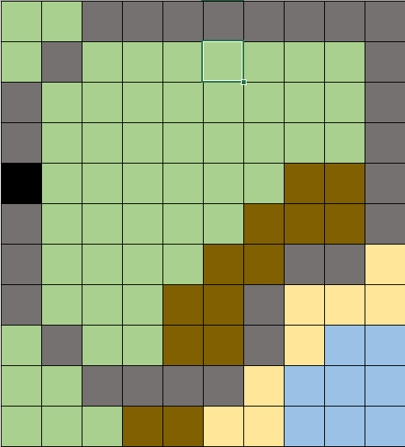
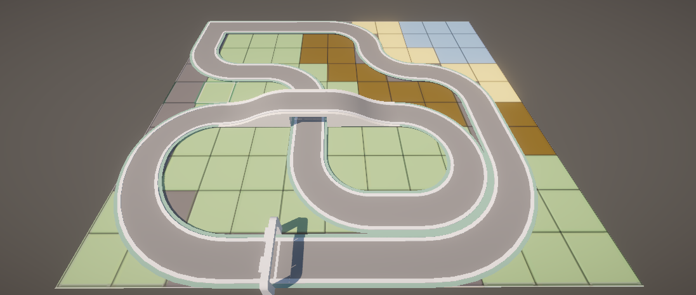

Design & prototype
 To start working on the project, I needed a design of how the track should be laid out. To get that done, I first sketched how the track will look like from a top-down view and iterating on the design to get rid of large empty regions to make it more interesting.
 After being content with the design of the track, I moved on to assembling the track with the given assets. And testing how the track plays and looks at the early stage to further tweak the design.
Finishing off
To finish off the project, the track still needs to be improved - the track needs to look interesting. I was required to make use of free assets so this is where kit-bashing comes into play. Looking through the available assets, I started to create ideas of what the theme could be and finally decided to go for a more crazy theme of the track being indoors, a table-top racetrack toy.